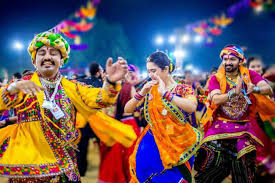

Navaratri, also spelled Navratri or Navarathri, is a nine nights (and ten days) Hindu festival, celebrated in the Tamil month of Purattasi (17 September to 17 October) every year. It is celebrated differently in various parts of the Indian subcontinent. There are two seasonal Navaratri in a year. This festival in this month is called Sharada Navaratri that is the most celebrated for Goddess Durga. In India, Goddess Durga battles and emerges victorious over the buffalo demon Mahishasuran to help restore Dharma.
Celebrations include stage decorations, recital of the legend, enacting of the story, and chanting of the scriptures of Hinduism. The nine days are also a major seasonal and cultural event, and the public celebrations of classical and folk dances of Hindu culture. On the final day, called the Vijayadashami or Dussehra, the statues are either immersed in a water body such as river and ocean, or alternatively the statue symbolizing the evil is burnt with fireworks marking evil's destruction.
The Sharada Navaratri commences on the first day (pratipada) of the bright fortnight of the lunar month of Ashvini. The festival is celebrated for nine nights once every year during this month, which typically falls in the Gregorian months of September and October. The exact dates of the festival are determined according to the Hindu luni-solar calendar, and sometimes the festival may be held for a day more or a day less depending on the adjustments for sun and moon movements and the leap year.